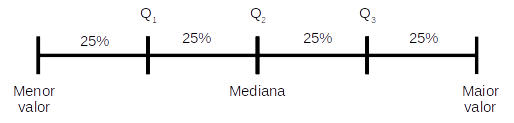
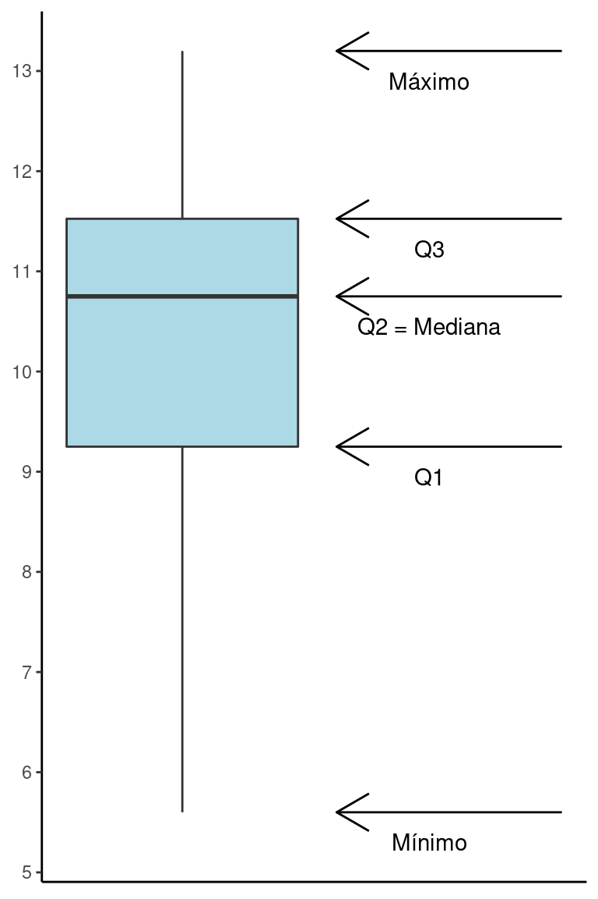
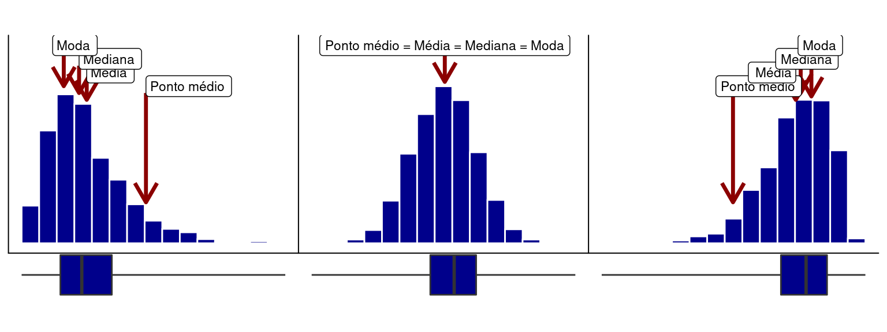

library(tidyverse)
library(flextable)
library(patchwork)
source('scripts/assimetria_ggplot.r')7 Medidas de posição: quartis
Pacotes e funções utilizadas no capítulo
A média, mediana, moda e ponto médio são um tipo de medidas de posição que indicam uma posição particular, isto é, a posição central ao redor da qual os dados estão dispersos. Existem no entanto, outras medidas de posição como quartis, medidas comumente utilizadas na descrição, análise e interpretação de dados.
Os quartis de uma distribuição de valores são obtidos após ordenarmos os dados em ordem crescente e em seguida agrupá-los em partes iguais, contendo cada uma 25% do número total de observações. Se temos 20 observações, cada parte conterá portanto cinco observações, \(20 \times 0.25 = 5\). Os quartis são as posições numéricas que dividem estas partes.
Os quartis podem ser indicados por \(Q_1\), \(Q_2\) e \(Q_3\), conforme a figura abaixo.

Quartis
\(Q_{1}\) O ponto que separa os 25% menores valores do restante da distribuição.
\(Q_{2}\): O ponto que separa os 50% menores valores dos 50% maiores. Este coincide com a Mediana apresentada anteriormente.
\(Q_{3}\): O ponto que separa os 25% maiores valores do restante da distribuição.
Os quartis que veremos aqui são medidas empíricas dos limites indicados na figura acima. Calculamos estes limites a partir de uma amostra de tamanho \(n\).
7.1 Cálculo dos quartis na posição \(j\)
Existem diferentes algorítmos possíveis para o cálculo dos quartis. Veremos um destes algoritmos. Para isto, siga os passos abaixo:
Re-organize \(X\) em ordem crescente de \(k = 1\) a \(k = n\). Seja \(n\) o número de observações em \(X\), teremos portanto \(X_k\) como o valor observado na posição \(k\) em ordem crescente. Deste modo, para \(k = 1\) teremos \(X_1\) como o menor valor e para \(k = n\) teremos \(X_n\) como o maior valor.
Calcule
\(L = \frac{j \times (n+1)}{4}\);
Defina \(k\) como o maior número inteiro abaixo de \(L\);
Calcule
\(Q_j = X_k + (L - k) \times (X_{k+1}-X_k)\);
- \(Q_j\) será um elemento entre \(X_k\) e \(X_{k+1}\). Se \(X_k\) for um número inteiro, \(Q_j = X_k\)
Exemplo para o cálculo de \(Q_1\)
set.seed(1)
X = round(rnorm(20, 10, 2),1)
nX = length(X)Considere a variável \(X\) com \(n =\) 20 observações.
\(X\) = 8.7, 10.4, 8.3, 13.2, 10.7, 8.4, 11, 11.5, 11.2, 9.4, 13, 10.8, 8.8, 5.6, 12.2, 9.9, 10, 11.9, 11.6, 11.2
sX = sort(X)
j1 = 1
L1 = j1 * (nX + 1)/4
k1 = floor(L1)
Q1 = sX[k1] + (L1 - k1) * (sX[k1+1] - sX[k1])
j2 = 2
L2 = j2 * (nX + 1)/4
k2 = floor(L2)
Q2 = sX[k2] + (L2 - k2) * (sX[k2+1] - sX[k2])
j3 = 3
L3 = j3 * (nX + 1)/4
k3 = floor(L3)
Q3 = sX[k3] + (L3 - k3) * (sX[k3+1] - sX[k3])- Arrange em ordem crescente para determinar os valores de \(X\) nas posições \(k\).
Posicao_k = paste(1:length(X), "a Posição", sep = "")
df = tibble(`Posicao k` = Posicao_k, `X ordenado` = sX)
df %>%
flextable() %>%
width(width = 1.5)Posicao k | X ordenado |
1a Posição | 5.6 |
2a Posição | 8.3 |
3a Posição | 8.4 |
4a Posição | 8.7 |
5a Posição | 8.8 |
6a Posição | 9.4 |
7a Posição | 9.9 |
8a Posição | 10.0 |
9a Posição | 10.4 |
10a Posição | 10.7 |
11a Posição | 10.8 |
12a Posição | 11.0 |
13a Posição | 11.2 |
14a Posição | 11.2 |
15a Posição | 11.5 |
16a Posição | 11.6 |
17a Posição | 11.9 |
18a Posição | 12.2 |
19a Posição | 13.0 |
20a Posição | 13.2 |
- Para \(j = 1\) (\(Q_1\)) calcule:
\(L = \frac{1 \times (20+1)}{4} = 5.25\);
Defina \(k\) como o maior número inteiro abaixo de \(L\). Portanto, se \(L = 5.25\), \(k = 5\).
Do item anterior, note que a observação correspondente à \(k = 5\) (5\(^a\) posição) é 8.8, enquanto a observação correspondente à \(k = 5 + 1 = 6\) (6\(^a\) posição) é 9.4. Deste modo, calcule
\(Q_1 = 8.8 + (5.25 - 5) \times (9.4-8.8) = 8.95\);
Vemos então que para a variável \(X\) em questão, o primeiro quartil é:
\(Q_1 = 8.95\)
Exercício: Calcule agora os valores correspondentes a \(Q_2\) e \(Q_3\) e verifique que os resultados são: \(Q_2 = 10.75\) e \(Q_3 = 11.575\)
7.2 Cálculo dos quartis no R
Podemos programar a sequência de funções acima utilizando o R:
X = c(8.7, 10.4, 8.3, 13.2, 10.7, 8.4, 11, 11.5, 11.2, 9.4,
13, 10.8, 8.8, 5.6, 12.2, 9.9, 10, 11.9, 11.6, 11.2)
# Ordenando X em ordem crescente
sX = sort(X, decreasing = FALSE)
# Encontrando o número de observações em X
n = length(X)
# Encontrando os quartis (Q1, Q2 e Q3)
j = c(1, 2, 3)
L = j * (n + 1)/4
k = floor(L)
Q = sX[k] + (L - k) * (sX[k+1] - sX[k])
names(Q) = c('Q1', 'Q2', 'Q3')
# Vizualizando os quartis
Q Q1 Q2 Q3
8.950 10.750 11.575 No entando, existe uma função no R denominada quantile que pode ser utilizada da seguinte forma:
quantile(X, probs = c(0.25, 0.50, 0.75)) 25% 50% 75%
9.250 10.750 11.525
Observações
Lembre que o quartil \(Q_1\) delimita a posição \(25\%\), \(Q_2\) delimita a posição \(50\%\) (\(=\) mediana) e \(Q_3\) delimita as posição \(75\%\). Por este motivo utilizamos o argumento
probs = c(0.25, 0.50, 0.75). Deste modo, a funçãoquantileé mais geral que a rotina passada anteriormente, uma vez que permite o cálculo para qualquer posição entre os quantis \(0\%\) e \(100\%\).Note também que os resultados foram ligeiramente diferentes, uma vez que existem diferentes algoritmos para o cálculo dos quartis. A função
quantilepermite a escolha entre \(9\) algoritmos diferentes e por padrão, utiliza otype = 7. O passo-a-passo que mostramos nesta apostila corresponde aotype = 6. Você pode verificar que se digitar o comando abaixo, os resultados serão os mesmos que calculamos manualmente.
quantile(X, probs = c(0.25, 0.50, 0.75), type = 6) 25% 50% 75%
8.950 10.750 11.575 Ainda que cada algoritmo possa resultar em pequenas diferenças, estas diferenças diminuem à medida que o tamanho amostral aumenta.
Finalmente, os quartis discutidos aqui são casos particulares de limites mais gerais denominados de quantis que indicam uma deteminama posição na distribuição. Como vimos, o limite \(Q_1\) por exemplo, denominado de Quartil 1 delimita o trecho que separa \(25\%\). Poderíamos denominar este limite de Quantil \(0,25\). Pensando desta maneira, poderíamos encontrar qualquer posição. Por exemplo o quantil \(0,10\), que delimita os \(10\%\) dos menores valores, o quantil \(0,025\) que delimita os \(2,5\%\) menores valores na distribuição, e assim, por diante.
É comum verificarmos outros limites importantes como \(2,5\%\), \(5\%\), \(10\%\), \(90\%\), \(95\%\) e \(97,5\%\).
No cálculo dos quantis para um limite \(p\) qualquer (\(0 \le p \le 1\)) a única mundança no algoritmno que apresentamos neste capítulo está na obtenção de \(L\) (passo 2), que é feita como:
\[L = p \times (n+1)\]
7.3 Obtendo os quartis a partir de uma tabela de dados
Importe a base de dados Reservatorios_Parana_parcial.csv.
res = read_delim('Reservatorios_Parana_parcial.csv',
delim = ',',
locale = locale(decimal_mark = '.',
encoding = 'latin1'))Assim como fizemos nos capítulos anteriores usaremos a função summarise para obter os quartis para a variável CPUE.
res %>%
summarise(Quartis = quantile(res$CPUE,
probs = c(0.25, 0.5, 0.75))) %>%
mutate(Limites = c('25%', '50%', '75%')) %>%
flextable()Quartis | Limites |
7.43 | 25% |
11.74 | 50% |
16.30 | 75% |
7.4 Boxplots: uma representação gráfica dos quartis
Os quartis de uma distribuição no ajudam a entender o formato de uma distribuição. Uma das formas amplamemte estabelecidas de representarmos graficamente os quartis são por meio de um gráfico denominado de Boxplot. Para a variável acima, o boxplot será:
Code
df = data.frame(X)
PX = quantile(X, probs = c(0, 0.25, 0.50, 0.75, 1))
LegX = c("Mínimo", "Q1", "Q2 = Mediana", "Q3", "Máximo")
ggplot(df, aes(y = X)) +
geom_boxplot(fill = 'lightblue', coef = 10) +
annotate(geom = 'text', x = .8, y = PX - 0.3,
label = LegX) +
annotate(geom = 'segment',
x = 0.5, xend = 1.23,
y = PX, yend = PX,
arrow = arrow(ends = 'first')) +
scale_y_continuous(breaks = 5:14) +
theme_classic() +
theme(axis.title = element_blank(),
axis.text.x = element_blank(),
axis.ticks.x = element_blank())
Em um boxplot, a linha central representa a Mediana ou \(2^o\) quartil (\(Q_2\)) e os limites da caixa são o \(1^o\) e \(3^o\) quartis, respectivamente \(Q_1\) e \(Q_3\). As extremidades geralmente são os pontos máximo e mínimo da dsitribuição.
Existe uma relação entre os histogramas e os boxplots. Ambos podem ser utilizados para avaliarmos o grau de assimetria de uma distribuição como apresentado abaixo. Em uma distribuição simétrica, a caixa do boxplot tende a se concentrar no meio da distribuição, enquanto em distribuições assimétricas, a caixa tende a ficar deslocada à esquerda ou à direita (Figura 7.3).
Code
# Ver função completa no arquivo 'scripts/assimetria_ggplot.r'
assimetria_ggplot(fig = 'bh')